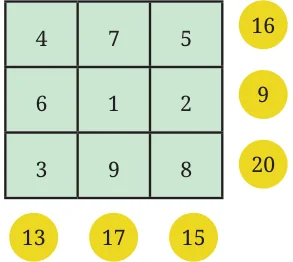
Observe this \(3 \times 3\) grid. It is filled following a simple rule — use numbers from 1–9 without repeating any of them. There are circled numbers outside the grid.
Are you able to see what the circled numbers represent? The numbers in the yellow circles are the sums of the corresponding rows and columns. Fill the grids below based on the rule mentioned above:
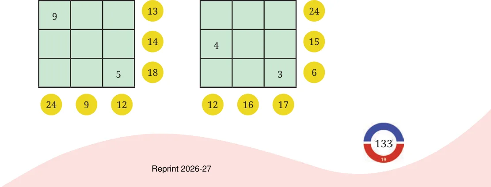
Make a couple of questions like this on your own and challenge your peers. Try solving the problem below.
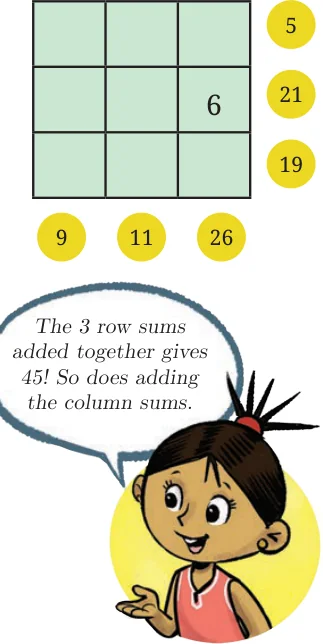
You might have realised that it is not possible to find a solution for this grid. Why is this the case? The smallest sum possible is \(6 = 1 + 2 + 3\). The largest sum possible is \(24 = 9 + 8 + 7\). Clearly, any number in a circle cannot be less than 6 or greater than 24. The grid has sums 5 and 26. Therefore, this is impossible! In the earlier grids which we solved, Kishor noticed that the sum of all the numbers in the circles was always 90. Also, Vidya observed that the sum of the circled numbers for all three rows, or for all three columns, was always 45. Check if this is true in the previous grids you have solved.
Why should the row sums and column sums always add to 45? From this grid, we can see that all the row sums added together will be the same as the sum of the numbers 1–9. This can be seen for column sums as well. The sum of the numbers 1–9 is
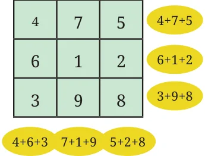
\(1 + 2 + 3 + 4 + 5 + 6 + 7 + 8 + 9 = 45\).
A square grid of numbers is called a magic square if each row, each column and each diagonal, add up to the same number. This number is called the magic sum. Diagonals are shown in the picture. Trying to create a magic square by randomly filling the grid with numbers may be difficult! This is because there are a large number of ways of filling a \(3 \times 3\) grid using the numbers \(1 - 9\) without repetition. In fact, it can be found that there are exactly 3,62,880 such ways. Surprisingly, the number of ways to fill in the grid can be found without listing all of them. We will see in later years how to do this. Instead, we should proceed systematically to make a magic square. For this, let us ask ourselves some questions.
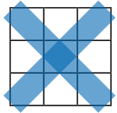
1. What can the magic sum be? Can it be any number?
Let us focus, for the moment, only on the row sums. We have seen that in a \(3 \times 3\) grid with numbers \(1 - 9\), the total of row sums will always be
45. Since in a magic square the row sums are all equal, and they add up to 45, they have to be 15 each. Thus, we have the following observation.
Observation 1: In a magic square made using the numbers 1–9, the magic sum must be 15.
2. What are the possible numbers that could occur at the centre of a magic square?
Let us consider the possibilities one by one. Can the central number be 9? If yes, then 8 must come in one of the other squares. For example, in this, we must have \(8 + 9 +\) other number \(= 15\). But this is not possible! The same issue will occur no matter where we place 8. So, 9 cannot be at the centre.
Can the central number be 1? If yes, then 2 should come in one of the other squares. Here, we must have \(2 + 1 +\) other number \(= 15\). But this is not possible because we are only using the numbers 1–9. The same issue will occur no matter where we place 1. So, 1 cannot be at the centre, either.
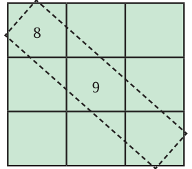
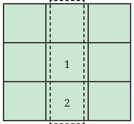
Using such reasoning, find out which other numbers 1–9 cannot occur at the centre. This exploration will lead us to the following interesting observation.
Observation 2: The number occurring at the centre of a magic square, filled using 1–9, must be 5.
Let us now see where the smallest number 1 and the largest number 9 should come in a magic square. Our second observation tells us that they will have to come in one of the boundary positions. Let us classify these positions into two categories:
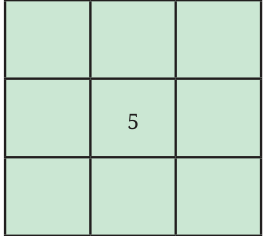
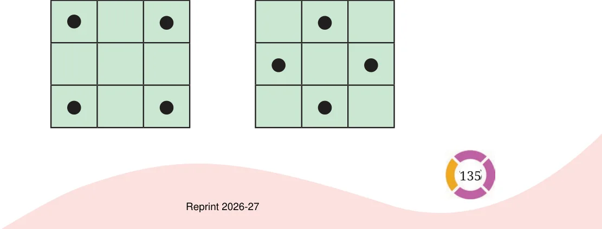
Can 1 occur in a corner position? For example, can it be placed as follows?
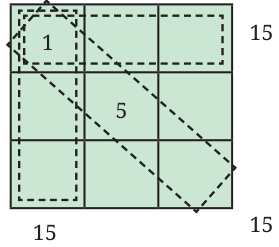
If yes, then there should exist three ways of adding 1 with two other numbers to give 15. We have \(1 + 5 + 9 = 1 + 6 + 8 = 15\). Is any other combination possible?
Similarly, can 9 be placed in a corner position?
Observation 3: The numbers 1 and 9 cannot occur in any corner, so they should occur in one of the middle positions.
Can you find the other possible positions for 1 and 9?
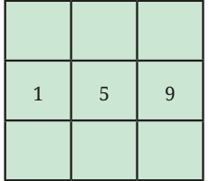
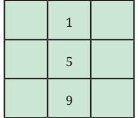
Now, we have one full row or column of the magic square! Try completing it! [Hint: First fill the row or columns containing 1 and 9]